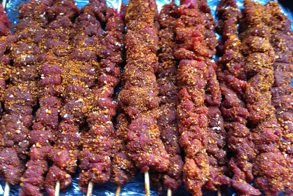

Nigerian Suya Recipe

Description
This simple, spicy kebab dish allows you to replicate the delicacy sold by Nigerian street vendors.
Ingredients
- 1 tablespoon finely ground roasted peanuts
- 1 teaspoon ground cayenne pepper
- 1 teaspoon ground paprika
- 1 teaspoon salt
- 1/2 teaspoon ground ginger
- 1/2 teaspoon garlic powder
- 1/2 teaspoon onion powder
- 1 1/2 pounds beef tri-tip steak, cut into bite-size pieces
- 1 red bell pepper, cut into bite-size pieces
- 1/4 onion, cut into bite-size pieces
- 4 mushrooms, halved
Steps
- Mix ground peanuts, cayenne pepper, paprika, salt, ginger, garlic powder, and onion powder together in a bowl.
- Combine spice mixture and beef in a resealable plastic bag; shake until well coated. Marinate in the refrigerator, about 30 minutes.
- Preheat an outdoor grill for medium-high heat and lightly oil the grate.
- Place beef, bell pepper, onion, and mushrooms in alternating order onto skewers.
- Cook on the preheated grill, flipping once, until meat is browned and vegetables are soft, 10 to 15 minutes.